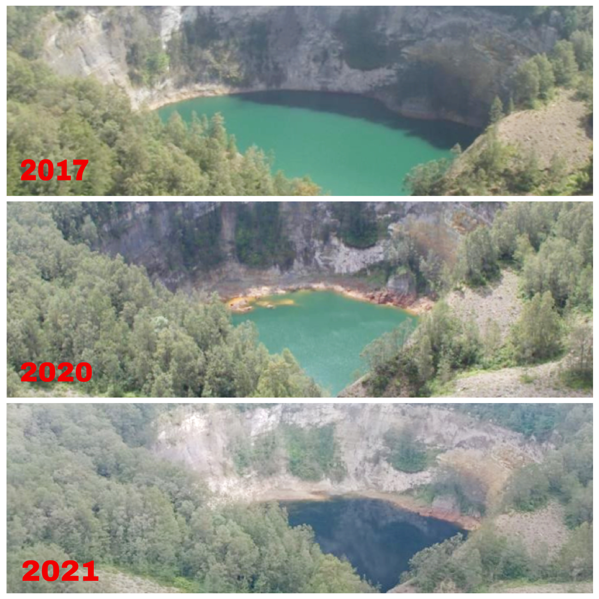

Lake Kelimutu is one of the tourist attractions whose image is on the means of payment circulating in Indonesia for a nominal note of 5000 rupiah with the year published in 1992. The beauty of Lake Kelimutu is in Pemo Village, Kelimutu District, Ende Regency, East Nusa Tenggara. The name Kelimutu itself comes from the words "Keli" which means mountain and "Quality" which means boiling.
Lake Kelimutu, which is also known as the three-colored lake, provides a natural view that spoils the eyes of every tourist who visits with the sparkling colors of the water. For those of you who like to enjoy the sunrise, you can visit these tourist attractions with your family or friends. Let's get to know the beauty of Kelimutu Lake and the tourist attractions around it.
